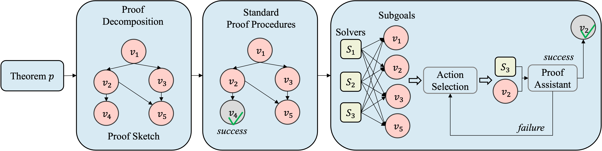

Allocates proof attempts from Lean-targeting LLM provers (Goedel, Kimina, DeepSeek-Prover) over decomposed subgoals; Lean checks the generated proofs, with automation tactics run first.
Abstract
Large language model (LLM) theorem solvers differ in both proving capability and inference cost. Applying an expensive solver to every subgoal wastes computation when cheaper models are sufficient, while always starting from the cheapest solver wastes attempts on subgoals that require stronger models. We present BudgetPV, an agentic budget-aware predict-and-verify system that allocates computation across unresolved subgoals and heterogeneous LLM solvers. BudgetPV uses a cross-solver predictor to guide solver selection for each subgoal and revises the allocation as verification feedback becomes available. The allocation problem changes as proving progresses. Early decisions mainly determine which solver should handle an untried subgoal, while later decisions determine which previously attempted subgoals should receive additional computation. We train the predictor with two objectives for these two stages. Class-weighted cross-entropy improves assignment to less frequent stronger solvers during the initial stage, while plain cross-entropy provides better calibrated probabilities for later allocation among previously attempted subgoals. We evaluate BudgetPV on Lean Workbook, miniF2F, ProofNet, and PutnamBench using three progressively expanded solver settings: a strong but expensive solver alone, adding a medium-cost solver with intermediate solving capability, and further adding a cheap solver with lower solving capability. BudgetPV requires less LLM generation computation than uniform allocation to solve the same number of subgoals across the evaluated settings. The experiments further show the computation savings obtained as medium- and lower-cost solvers are added.
Problem
LLM theorem provers differ in capability and inference cost. Spending an expensive solver on every decomposed subgoal wastes compute, and always starting with a cheap solver wastes attempts on hard subgoals.
Approach
BudgetPV takes a proof sketch and first applies Lean automation (simp, aesop, omega, nlinarith) to every subgoal. For the subgoals that remain, a cross-solver predictor estimates each solver's success probability, and actions are scored by predicted success divided by generation cost. The predictor is trained on Lean Workbook proof attempts, using class-weighted cross-entropy for initial assignment and plain cross-entropy for later reallocation. Lean verification feedback from failed attempts updates the estimates in a closed loop.

Figure 1: The overall framework of BudgetPV. A theorem p is decomposed into a proof sketch, and standard proof-assistant procedures first process all subgoals. At each decision step, BudgetPV predicts the success probability of each available LLM solver for each unresolved subgoal and selects a subgoal–solver action based on predicted success, computation cost, and the remaining allowed proof atte
Results
On Lean Workbook, miniF2F, ProofNet and PutnamBench, BudgetPV needs less GPU generation time than uniform allocation at every reported solve-rate target. At a 50% solve rate on miniF2F it uses 1,231 vs 2,672 GPU-seconds; adding medium- and low-cost solvers gives further savings in most settings.
Method
50%
70%
90%
Uniform
2,672
3,580
5,056
BudgetPV
1,231
1,955
4,881
Live proving on miniF2F: GPU-seconds of generation needed to reach each solve rate (single expensive solver)